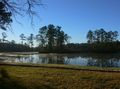
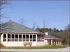
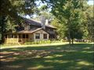
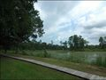

Your browser does not support script
禪修社區
首頁
自然景觀
禪堂講堂
社區設施
步道與行者
社區生活




Copyright © 2000-2026
Is Zen Center
All Rights Reserved
自然景觀
禪堂講堂
社區設施
步道與行者
社區生活
湖光天色
植物與動物
蓮花
一隅
禪講堂外觀
禪堂內景
講堂內景
平台
餐廳廚房
老房子
其他
環湖步道
禪堂內外步道
社區一般步道
林間步道
勞動
工作
娛樂運動
生活集錦